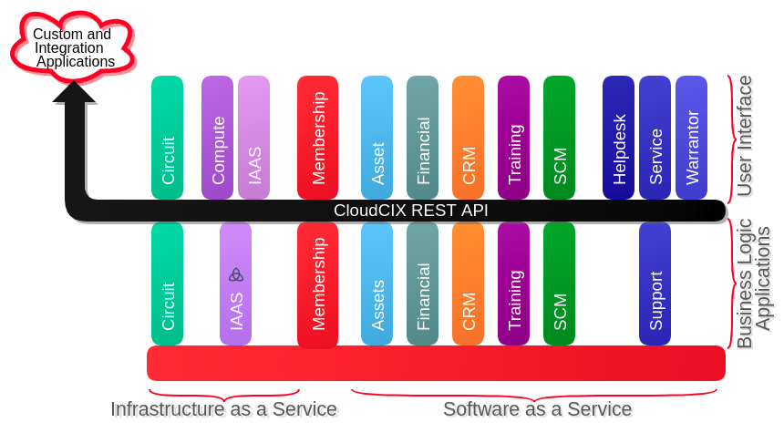

Docker
A worthwhale tool to learn
Roadmap

1. What is Docker?
What is a Container?
A standardized unit of software


Analogy
Explanation Part 1; Manual Tent
Explanation Part 2; Popup Tent
Close Enough
2. Let's talk about Docker

One more mention of tents
Let's Install Docker
For Windows / Mac Users;
Install GuideFor (most) Linux Users;
curl -sSL https://get.docker.com/ | shEven Docker isn't safe from "Hello, World!"
Once you have it installed;
docker run hello-worldshould contain the following output;
Hello from Docker!
This message shows that your installation appears to be working correctly.
2.5 More on Images
In the output of the last command I gave you, you might have seen something like this;
Unable to find image 'hello-world:latest' locally
latest: Pulling from library/hello-world
This is Docker saying
"I don't have the 'hello-world' image on this machine, let me go get it"
Where does it get images?
If only there was some kind of website where people could upload Docker images for various widely used applications...
The Docker Hub!

2.8 Building our own images
Example: techtalks-flask
flask
Step 1: Dockerfile
Step 1: Dockerfile
# Base image is the python 3.7 docker image
FROM python:3.7
# Set the working directory inside the image
WORKDIR /home/freyamade/public_html
# Copy from the build context to the image
COPY . .
# Install requirements
RUN pip install -r requirements.txt
# Load the latest submodules
RUN git submodule init
RUN git submodule update --remote
# Expose port 5000
EXPOSE 5000
# Set the entrypoint (CMD also works here)
ENTRYPOINT python3.7 app.py
Step 2: Building the image
docker build -t techtalks-flask .Step 3: Running the image
docker imagesdocker run -p 5000:5000 -d techtalks-flaskStep 4: Test
# show running containers
docker ps
# show all containers, dead or alive
docker ps -a
0.2 Some other cool stuff
Before I spill some company secrets, I want to share a couple of other cool things with you
-v
docker run -p 5000:5000 -v $(pwd):/home/freyamade/public_html -d freyamadetemplates/index.html, reload the page and you'll see it update in real time!
-v + web development
# Run from inside project directory, then go to localhost:8080
docker run -v $(pwd):/usr/local/apache2/htdocs/ -p 8080:80 -d httpd
Compose
techtalks-flask + Compose
Let's say I add some reason to use redis in the techtalks-flask project.
I could have the following compose file;
version: '3'
services:
web:
image: "techtalks-flask"
ports:
- "5000:5000"
redis:
image: "redis:alpine"
And then bring up both images using;
docker-compose up -dKubernetes
Kubernetes (k8s) is an open-source system for automating deployment, scaling, and management of containerized applications.
Docker DOOM
3. Let's spill some trade secrets

CIX Software
Why is the second one better?
Speed Increase
Speed Increase (cont'd)
Old Deployment System
fabric
git fetch origin, and git reset --hard <branch>
I've Dockerised my Application...
Conclusions
Conclusions (cont'd)
FROM docker-talk:audience
RUN answer-questions.sh